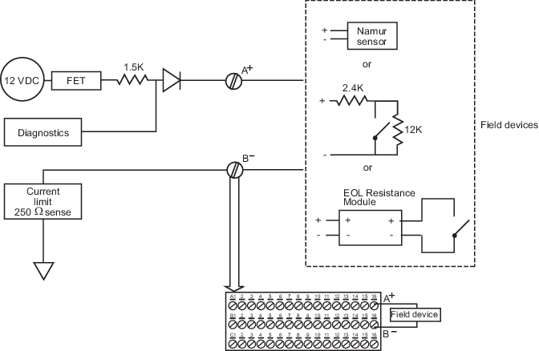

Discrete input channel specifications
Specifications
Line fault detection
The Discrete Input channels have line fault detection for detecting open or short circuits in field wiring. To use this capability you must:
- Enable line fault detection in your configuration. Enable line fault detection on a channel-by-channel basis when you configure the channels.
- Connect the dry contact to external resistors. Connect the dry contact to a 12 kΩ resistor in parallel (allows the open circuit detection) and a 2.4 kΩ resistor in series (allows short circuit detection).
- Emerson's End of Line Resistance Module (KJ2231X1-EC1) provides this function. This module connects to the Discrete Input channel and to a field contact.
Line fault detection in NAMUR sensors
Line fault detection is built into NAMUR sensors. Do not use external resistors with NAMUR sensors; however, you must enable line fault detection in your configuration when using NAMUR sensors.
Wiring diagrams
Wiring diagram and terminations for Discrete Input channels
showing the line fault detection options

It is assumed and recommended that applications use line fault detection; however, line fault detection can be omitted. The following image shows a wiring diagram and terminations for the Discrete Input channels without the line fault detection options.